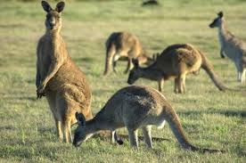
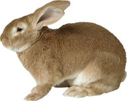

| Ot ile beslenen hayvanlara otobur veya gevis getiren memeliler denilir. Bitkisel organizmalari besin olarak kullanir. Bazilari evcil olurken bazilari yabani olabilir. Hem evcil hem de otobur olan hayvanlarin deri, tirnak, boynuz, bagirsak, kil, yun, tiftik v.s. faydalanilmaktadir. Bunlarin bazilari koyun, keci, manda, deve, inek gibi hayvanlar. Diger yabani otobur hayvanlar; geyik, oriks, bizon, gergedan, zurafa, fil v.s. hayvanlardir.3. Koyun-Keci; Dunya genelinde bircok çcesidi bulunmaktadir. Yunlerinden yatak, yorgan ve yastik yapilir. Yasam sureleri 10 ila 12 arasinda degisiklik gösterir. İnsanlar sigir gibi koyun ve keciden de çok faydalanir. Evcillesme süreleri M.O.6000 yillara kadar dayanir.4. Deve; Yukseklikleri 2 metre civarinda olup, kuyruk uzunlugu 70 cm civarindadir. Anadolu, Asya, Afrika gibi bölgelerde yogun olarak yasar. Develer col yasamina uyum saglamis, aclıga ve susuzluga oldukca dayaniklidir. Engebeli arazilerde olumsuz sartlarda yuk tasimaya elverisli bir vucuda sahiptir.
 |